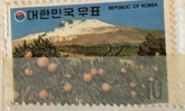
| SOURCE | TITLE| IMAGE MATCH | click to source page |
| Find Your Stamps Value | Kyongbok Palace (National Museum) - 경복궁 (국립중앙박물관) 10w Multicolored stamp price, value | 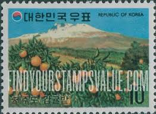 |
| eBay | Korea SC 845-54 MNH (2gum) | eBay | 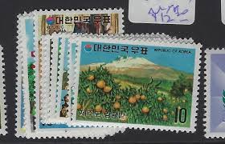 |
| Welcome to korea stamp portal system | 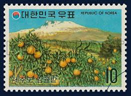 | |
| eBay UK | Korea 1973 Tourism/Mountain/Tangerine Trees/Fruit/Plants/Nature 2v set (n37037) | eBay UK | 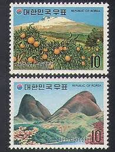 |
| Korea Stamp Society | 나만의 우표 / "My Own Stamps" examples from Jeju — Korea Stamp Society | 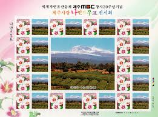 |
| North Korea Stamps : r/stamps | 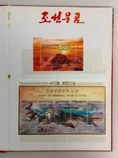 | |
| eBay | JAPAN 1991 (PREFECTURE) MOUNT IWATE PAINTING COMP. SET OF 1 STAMP SC#Z102 USED | eBay | 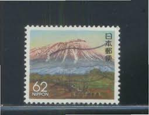 |
| eBay | Japan - Issue 1991 - (1929) Mint never Hinged | eBay | 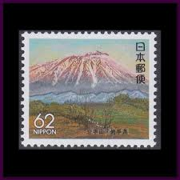 |
| eBay | Korea - SC 2157 Mountains sheet 2004 | eBay | 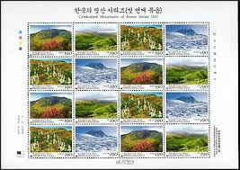 |
| eBay | FIRST DAY COVER JAPAN 0784 1991 Pane Special Prefecture Issue Iwate | eBay | 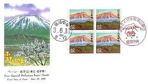 |
| Discogs | Untitled – Vinyl (LP, Album, Stereo), [r31288379] | Discogs | 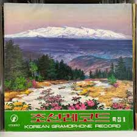 |
| eBay | JAPAN Sc#Z102 1991 Iwate, Painting - Iwate by Yaoji Hashimoto MNH | eBay | 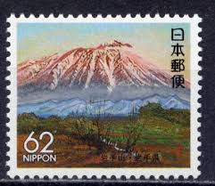 |
| Korea Stamp Society | KSC5238-5239: 78th Birthday of the Great Leader Comrade Kim Jong Il — Korea Stamp Society | 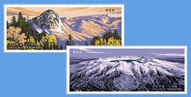 |
| Smithsonian Institution | Global Volcanism Program | Sabalan | 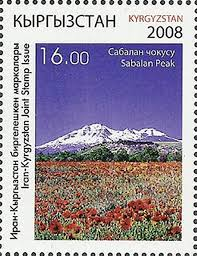 |
| Alamy | 2012 North Korea stamp set. 100th Anniversary of the Birth of Kim II Sung. "He said that only in the socialist paradise can children like you appear Stock Photo - Alamy | 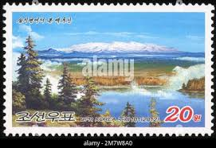 |
| Find Your Stamps Value | Jongyangsa Temple and Mt. Kumgang by Chong Son - 금강산 정양사 (정선) 10w Blue & multicolored stamp price, value | 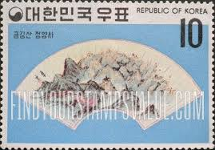 |
| eBay | JAPAN [Frame] stamps commemorative Japanese used prefecture R212 | eBay | 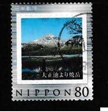 |
| Alamy | North Korean postage stamp featuring a black and white tuxedo cat, issued in 2002 (Juche 91), 150 won denomination Stock Photo - Alamy | 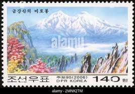 |
| WordPress.com | Iran – My collection of Postcards from the world | 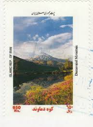 |
| Find Your Stamps Value | Value of AP爱彼皇家橡树手表复刻(✚威信:Vvp2292)-江诗丹顿手表原单高仿手表在哪里买(高仿手表.一比一复刻手表.a货手表)💯sxgho stamps | 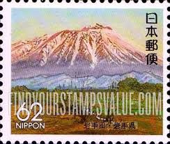 |
| eBay | Mint Hinged Postage Japanese Stamps for sale | eBay | 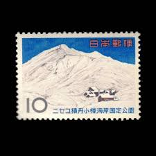 |
| Bob Shop | Iran - Iran - 2001 - MNH for sale in Kraaifontein (ID:665805949) | 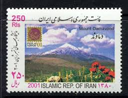 |
| HipStamp | Korea-1995 Sc#1814A 50th Annivesary-Liberation Day: MNH S/S-Very Fine | Asia - South Korea, General Issue Stamp / HipStamp | 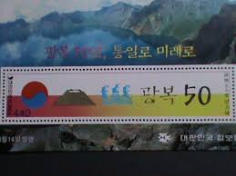 |
| Find Your Stamps Value | Value of herm island stamps | 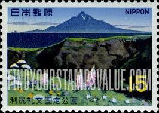 |
| eBay | Japan 1965 - Mihon Overprint - Specimen Overprint (794) Mint never Hinged | eBay | 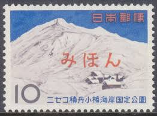 |
| TouchStamps | Stamp: Taehongdan (Korea, North 2005) - TouchStamps | 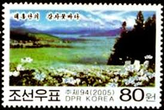 |
| postbeeld.com | Stamp 1968, Japan Rishiri Rebun park 1v, 1968 - Collecting Stamps - PostBeeld - Online Stamp Shop - Collecting | 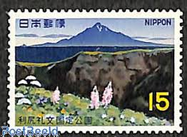 |
| eBay | Volcano Terrain,Jeju Island Oreum,Mountain,Nature,Tour,Korea 2025 Maximum Card | eBay | 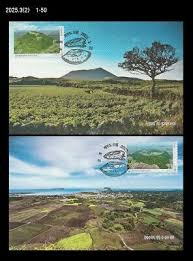 |
| eBay | JAPAN # 950 MNH RISHIRI NATIONAL PARK | eBay | 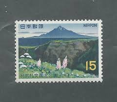 |
| Freestampcatalogue.com | Stamps with the theme Flowers & Plants - Freestampcatalogue.com - The free online stampcatalogue with over 500.000 stamps listed. | 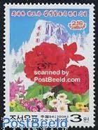 |
| eBay | Korea Painting Mountain 1977 Chinese Nature (stamp) MNH | eBay | 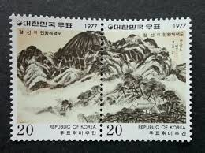 |
| eBay | W KOREA 4274-4275 MOUNT PAEKLU KIM JONG II 61ST BIRTHDAY | eBay | 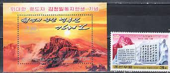 |
| eBay | Korea.... 1998 Sc #3693 s/s MNH OG | eBay | 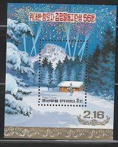 |
| eBay | R102D, Mt. Iwate, Iwate, Furusato Stamps, Japan stamp | eBay | 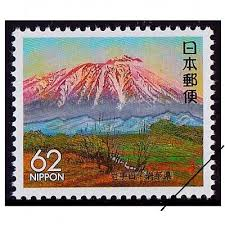 |
| eBay | KOREA Treaty on Basic Relations with Japan MNH set | eBay | 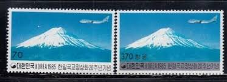 |
| eBay | Japan - Stamp Issue 2000 - (2857) Mint never Hinged | eBay | 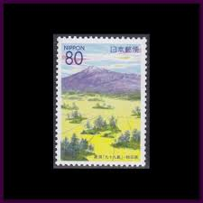 |
| brumstamp | Turkey 1982 Anatolian Mountains/ Nature/ Tourism/ Environment/ Climbing/ Sports 6v set n46213 | 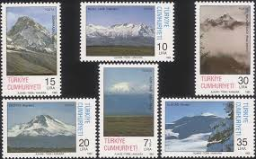 |
| brumstamp | Japan 1965 Niseko Shakotan Otaru National Park/ Niseko-Annupuri Mountains/ Nature 4 x 1v blk n28401 | 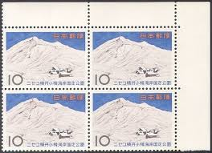 |
| eBay | Iran for sale | eBay | 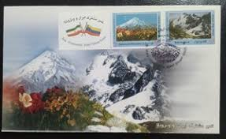 |
| eBay | Korea 2003 Sunrise of Mt. Paektu | eBay | 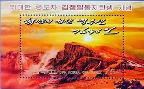 |
| eBay | FIRST DAY COVER JAPAN B3075 ̍ד V [ Y (6) 1988 N5 30 s | eBay | 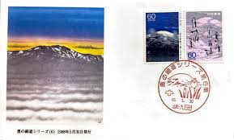 |
| eBay | Japan 2004 Relationship with USA 150th Anniv 80Y Complete Used Set Sc# 2901-2902 | eBay | 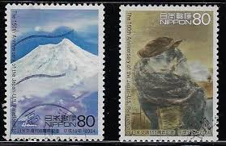 |
| eBay | Korea South 1987 "Modern Art Series (4th)" 4 Sheet | eBay | 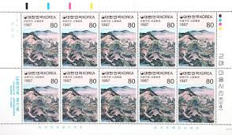 |
| eBay | 1965 RUSSIA MNH SCOTT #3117-3119 | eBay | 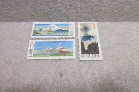 |
| eBay | Japan personalized stamp, Mt.Fuji (jpv2998) used | eBay | 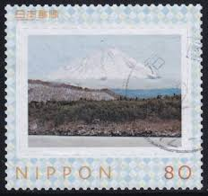 |
| eBay | Korea - 2006 Imperforated - MNH - (5004-5011) Mountains - Waterfall | eBay | 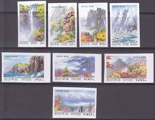 |
| Korea Stamp Society | 2024 Korea Stamp Corporation's stamps program — Korea Stamp Society | 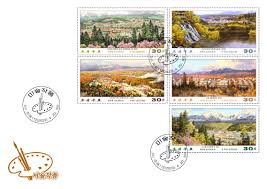 |
| eBay | Korea - 2004 Imperforated - MNH - (SS 577) Tok Islet - Map of Korea | eBay | 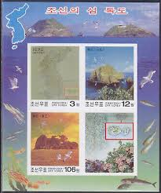 |
| Find Your Stamps Value | Value of Deh sedang stamps | 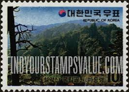 |
| japanesephilately.com | Stamps - Japanese Philately | |
| eBay | 1982 ANATOLIAN MOUNTAINS - FDC | eBay | |
| eBay | Japan personalized stamp, Mt.Fuji (jpv2413) used | eBay | |
| eBay | Art,Painting,Mountain,Mt.Geumgang by 謙齋 鄭敾,Nature,Korea 1999 FDC,Cover | eBay | |
| eBay | Korea - 2001 Imperforated - MNH - (4430) Birthday Kim Jong Il | eBay | |
| Alamy | 2006 North Korean postage stamp depicting the Podok Hermitage on the cliffs of Mount Kumgang, DPRK Stock Photo - Alamy | |
| Cigarettes Pedia | Mild Seven (vertical sightseeing pack 1980 013-016) - Cigarettes Pedia | |
| Etsy | 1940 Japan Scott #303 - 306 Mint Hinged Postage Stamp Set - Etsy | |
| 公益財団法人日本郵趣協会 | Kujuku Islands in Kisakata | |
| AbeBooks | A collection of small laminated posters of life in Iran in 1960. First edition. by Wall Herman V.; Frank R. Chow, photographers: (1960) Manuscript / Paper Collectible | Wittenborn Art Books | |
| Shutterstock | Japan Stamp: Over 10,004 Royalty-Free Licensable Stock Photos | Shutterstock |